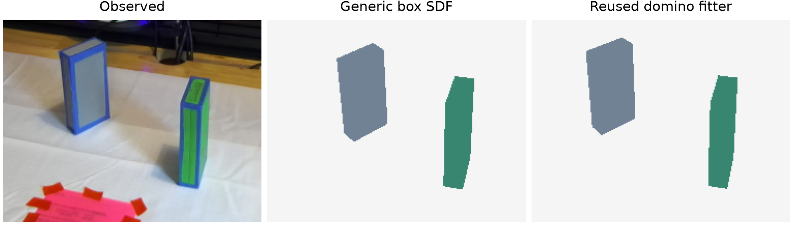

Reusing the domino fitter

| Training view | Generic box SDF | Reused domino fitter |
|---|---|---|
| Depth RMSE | 24.2 mm | 4.8 mm |
| Mask IoU | 0.713 | 0.678 |
| Depth coverage | 96.0% | 91.6% |
Same RGB, depth and masks; the reused fitter also receives a clear table patch. Depth improves, silhouette overlap decreases. No held-out or control validation.
Both boxes remain free bodies. Table contact guides fitting; assert_transform initializes their poses.
New program and fit · Baseline program · Comparison measurements · Implementation PR
VoxPoser and Guided MPC: settings in these runs
Same compiled stock-hand scenes, MuJoCo 3.15 and libccd, 2.5 ms physics steps
| Setting | VoxPoser + initial LEAP adapter | Guided MPC reference |
|---|---|---|
| Hand control | Hand pose + scalar open/close; fixed finger posture closes selected joints to 1.2 rad | 7 arm + 16 finger targets; grasp, squeeze, lift and regrasp proposals |
| Planning | Generated spatial maps on a 100³ grid; Cartesian IK, no MuJoCo grasp rollouts | 32 candidate sequences, each predicting 4 s of native MuJoCo dynamics |
| Feedback | One planning pass per move; object geometry reobserved between waypoints | Replan every 0.25 s (4 Hz) from the current state |
| Contact forces | Used by the outcome checker; not supplied to the generated planning code | Used in contact/support losses and the outcome checker |
| Physical checks | Checks executed states for hold acceptance; no rollout feasibility screening | Screens candidates for motion limits and penetration; allows recorded recovery fallbacks |
| Trial setup | GPT-4.1, temperature 0, seed 0; one generated program per object | Saved per-object controller, seed 1; no LLM during execution |
The fixed closure is an adapter restriction, not a demonstrated limit of VoxPoser. These differences prevent a controlled method ranking. The mustard reference is a fixed servo trajectory, not Guided MPC.
Acceptance and stopping rules · Verified settings and source evidence
What is shared, and what is not yet matched
| Setting | Shared | Remaining difference |
|---|---|---|
| Physical scene | Identical scene hashes: geometry, masses, actuators and initial fixture | Controllers expose different actions and observations; Python/JAX versions also differ |
| Final acceptance | 5 s supported hold; whole-object clearance ≥3 cm, motion/contact conditions and physical limits | VoxPoser's instruction requests 6 cm; it is scored by the same 3 cm native predicate |
| Orientation | Apple: any; screwdriver: tip-down; hammer: head-up; mustard: upright | Guided MPC also requires intermediate tool-stage holds; VoxPoser checks the final pose directly |
| Time ceilings | Apple 40 s; screwdriver 150 s; hammer 210 s; mustard 40 s | VoxPoser stops on code error or after the program plus 5.1 s of hold time. References can use the full ceiling |
| Current failures | All outcomes retain the original acceptance checks | VoxPoser hammer/mustard hit an undefined helper; the adapter also exceeds some physical limits |
Recorded adapter limitations: collision-cloud exclusion requests were ignored, and failed IK solves could still execute. These affect both H0 and A/B. The saved runs establish implementation behavior, not a method ranking.
Individual finger control: the programs did not use it
Eight trials on rolly, no MPC. A and B share the quaternion repair and measured hand-state context
| Object | A: fixed closure Qualifying hold | B: finger API available Qualifying hold / setter calls |
|---|---|---|
| Apple | 0 s | 0 s / 0 calls |
| Screwdriver | 0 s | 0 s / 0 calls |
| Hammer | 0 s | 0 s / 0 calls |
| Mustard bottle | Parser error before physics | Parser error before physics / 0 calls |
- Added: measured state for all 16 joints and a setter for individual joint targets. Native checks verified target persistence and open/close behavior.
- Observed: all four B programs kept using scalar gripper maps. We have not yet tested an executed independent-finger strategy generated by the LLM.
Implementation diff · Native checks · Outcomes and API-use counts · All A/B artifacts
Apple: fixed closure vs finger interface
Same scene, instruction, seed, shared observations and Cartesian backend; no MPC
0 s accepted hold
Generated code · Interface prompt · Outcome
0 s accepted hold; 0 joint-target calls
Generated code · Interface prompt · Outcome
Real-time playback. Offering the finger API did not cause its use in this trial. The original H0 result remains separate.
Original H0 comparison · Measured outcomes and API use · All A/B artifacts
Screwdriver: fixed closure vs finger interface
Same scene, instruction, seed, shared observations and Cartesian backend; no MPC
0 s accepted hold
Generated code · Interface prompt · Outcome
0 s accepted hold; 0 joint-target calls
Generated code · Interface prompt · Outcome
Real-time playback. Offering the finger API did not cause its use in this trial. The original H0 result remains separate.
Original H0 comparison · Measured outcomes and API use · All A/B artifacts
Hammer: fixed closure vs finger interface
Same scene, instruction, seed, shared observations and Cartesian backend; no MPC
0 s accepted hold
Generated code · Interface prompt · Outcome
0 s accepted hold; 0 joint-target calls
Generated code · Interface prompt · Outcome
Real-time playback. Offering the finger API did not cause its use in this trial. The original H0 result remains separate.
Original H0 comparison · Measured outcomes and API use · All A/B artifacts
Mustard bottle: fixed closure vs finger interface
Both generated object parsers fail before any physics step

0 s simulation; parser returned None
Generated code · Interface prompt · Outcome

0 s simulation; parser returned None; 0 joint-target calls
Generated code · Interface prompt · Outcome
Images show the initial scene, not an executed pickup. The saved single-frame recordings are retained in the artifact bundle. The original H0 result remains separate.
Original H0 comparison · Measured outcomes and API use · All A/B artifacts
VoxPoser on RoboTL pickup tasks
Initial Panda + LEAP integration: no accepted five-second hold in these four trials
Side-by-side comparison · Generated code · Outcome
Side-by-side comparison · Generated code · Outcome
Side-by-side comparison · Generated code · Outcome
Side-by-side comparison · Generated code · Outcome
All four ran in parallel on rolly. Presentation clips: 480 × 360 at 24 fps, real time; original recordings remain in the bundles. These trials test the initial adapter; they do not establish a method ranking.
All VoxPoser artifacts · Results · Generated programs · Saved maps
Apple: VoxPoser and Guided MPC
Lift and hold for five seconds. Identical compiled stock-hand scene, different controllers
Program finished; no accepted lift
Generated code · Outcome · Config
4.38 s longest qualifying hold; target not completed
Controller and recording · Outcome · Config
Real time; each video stops when its episode ends. VoxPoser seed 0; reference seed 1. Time ceilings match; stopping rules and action interfaces differ.
Scene hashes, selection rule and comparison limits · VoxPoser wide view · Reference wide view
Screwdriver: VoxPoser and Guided MPC
Lift and hold tip-down for five seconds. Identical compiled stock-hand scene, different controllers
Program finished; no accepted lift
Generated code · Outcome · Config
Lifted, but no qualifying tip-down hold
Controller and recording · Outcome · Config
Real time; each video stops when its episode ends. VoxPoser seed 0; reference seed 1. Time ceilings match; stopping rules and action interfaces differ. The reference also checks intermediate stage holds.
Scene hashes, selection rule and comparison limits · VoxPoser wide view · Reference wide view
Hammer: VoxPoser and Guided MPC
Lift and hold head-up for five seconds. Identical compiled stock-hand scene, different controllers
Stopped: undefined vec2quat
Generated code · Outcome · Config
No qualifying head-up hold
Controller and recording · Outcome · Config
Real time; each video stops when its episode ends. VoxPoser seed 0; reference seed 1. Time ceilings match; stopping rules and action interfaces differ. The reference also checks intermediate stage holds.
Scene hashes, selection rule and comparison limits · VoxPoser wide view · Reference wide view
Mustard bottle: VoxPoser and Fixed servo trajectory
Lift and hold upright for five seconds. Identical compiled stock-hand scene, different controllers
Stopped: undefined vec2quat
Generated code · Outcome · Config
No qualifying upright hold
Controller and recording · Outcome · Config
Real time; each video stops when its episode ends. VoxPoser seed 0; reference seed 1. Time ceilings match; stopping rules and action interfaces differ. The reference uses a fixed servo trajectory, not Guided MPC.
Scene hashes, selection rule and comparison limits · VoxPoser wide view · Reference wide view
What VoxPoser generated for pickup
Exact planner outputs used by the recorded RoboTL trials
Apple
Screwdriver
Hammer
Mustard bottle
Generated code (full prompts in the bundles): Apple · Screwdriver · Hammer · Mustard bottle
The rotation code failed
Hammer: the generated movement program calls this rotation-map block
vec2quatis not defined in the execution environment. Hammer and mustard stop with aNameError.- These runs expose a generated-code/API mismatch. They do not establish how a corrected integration would perform.
Recorded errors: Hammer · Mustard bottle
The saved grasp maps and paths

Blue: planned tool-centre path. Red: target voxel. Yellow: close-gripper region.
These are planned paths, not measured trajectories. Download numeric maps, generated code and native trajectories
VoxPoser: initial RLBench trials
Language-generated value maps guide a Panda arm with a parallel gripper. GPT-4.1, seed 0, CoppeliaSim
13.9 seconds of simulation
Video · Outcome · Config
11.8 seconds of simulation
Video · Outcome · Config
- Success means reaching RLBench's task condition during execution. The lid trial reaches it, but does not retain it at the final state.
- Two setup trials. A matched comparison with Guided MPC is still pending.
Original recordings: 128 × 128 pixels. View generated programs
Download all artifacts · Run details · VoxPoser code
The generated plans
Actual GPT-4.1 outputs used in the two recordings
Saucepan: task condition reached during execution
Button: task condition not reached
Each composer(...) call generates another program that defines the motion.
Full generated code: Saucepan · Button
The generated map code
For the lid grasp, the model defines a target voxel and a region where the gripper closes
Target: the lid's centre
Gripper: open elsewhere, close within 1 cm of the lid
Exact generated code. Positions here are voxel indices.
All 16 saucepan code blocks · All 10 button code blocks · All artifacts